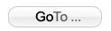
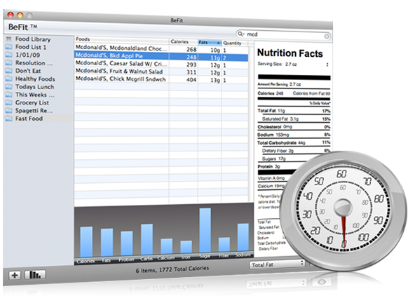
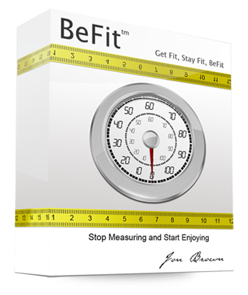

|  |
|

|
BeFit is the ultimate tool for tracking your caloric intake in the everyday foods that we eat. But it doesn't stop there, we also let you track every single piece of data found on the Nutrition Facts panel on the foods that you eat everyday. BeFit allows you to track your sugar intake, great for diabetics. Track fats taken in vs. calories. The possibilities are limitless.
|
|
Making lists is easy, just press the + button on the bottom left hand corner and it will automatically generate a new list. To name the list just click once and it will enter edit mode. Type in the name for your new list. To remove a list just select the list you wish to delete and press the delete key.
To view all the food items choose the Food Library list in the left side menu. This will automatically show you all 7500+ foods in the database. You can scroll down and add the foods you want by clicking on the food and dragging it into a list. |
{kind=link}
 You can scroll down and add the foods you want by clicking on the food and dragging it into a list. If you cant find the food you want then search for it in the search field above. The built in Spotlight Technology will narrow down the library based on your search for ease of use. You can scroll down and add the foods you want by clicking on the food and dragging it into a list. If you cant find the food you want then search for it in the search field above. The built in Spotlight Technology will narrow down the library based on your search for ease of use.
You do not need to save, each time you quit or open the program it reads from a recent backup of your data. Each time you quit a new backup image is automatically created and stored. |
{kind=link}
|
To use this feature simply drag a food item into a user defined list once there you will be able to change your quantity.
Choose the food item you want from your search list or your food list, and from the drop down choose the appropriate serving size. The auto update feature will automatically download and install new versions. You must have version 1.0.3 to get this feature. |
{kind=link}
|

|
With BeFit you have the Largest USDA food database included. Spotlight search has also been coded into the app to make it very easy to find the food your looking for. Each food item comes with a full Nutrition Facts panel just like you would see in the store.
You have the ability to make infinite tracking lists. Each list can be renamed, and sorted to your liking. You can hide and show nutrients based on what you want to track and you will get a running total in each list. Now you can use food quantities as well as the ability to track foods by serving size. Features |